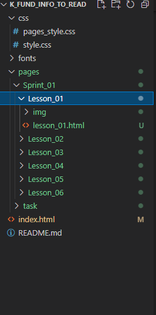

Имена файлов и структура проекта
- Забудьте про кирилицу используйте в именах файлов только латинские символы.
- Старайтесь не использовать в именах файлов никаких спец символов кроме "_"(подчеркивание).
-
Имена папок (и файлов) вашего проекта должны быть лаконичны и понятны и желательно прописными (маленькими) буквами.
Например: css, img, fonts, scr, pages, lesson_01, sprint_02 и т.д. - Главный файл вашего проекта должен всегда называться index.
- Пример структуры Вашего проекта на картинке ниже: 
- Конспект: основы CSS
- Основы CSS
- Создание таблиц в HTML. Все о HTML таблицах
- HTML Таблицы
- HTML таблицы продвинутые возможности и доступность
-
Чтобы посмотреть все установленные настройки и узнать где именно они заданы, используйте команду:
git config --list --show-origin -
Первое, что вам следует сделать после установки Git — указать ваше имя и адрес электронной почты. Это важно,
потому что каждый коммит в Git содержит эту информацию, и она включена в коммиты, передаваемые вами,
и не может быть далее изменена:
$ git config --global user.name "John Doe"
$ git config --global user.email johndoe@example.com
Базовые теги
Базовые теги изучали на первом уроке.
А это превосходный ресурс справочник по HTML, CSS.
Первый CSS
Базовые теги и метод подключения файла стилей изучали на втором уроке.
- Несколько интересных статей
Таблицы
Базовые методы работы с таблицами изучались на третьем уроке.
- Несколько интересных статей (если вдруг не хватило)
Git
Введение - Первоначальная настройка Git
Настройки из статьи, которые вам потребуются сразу: